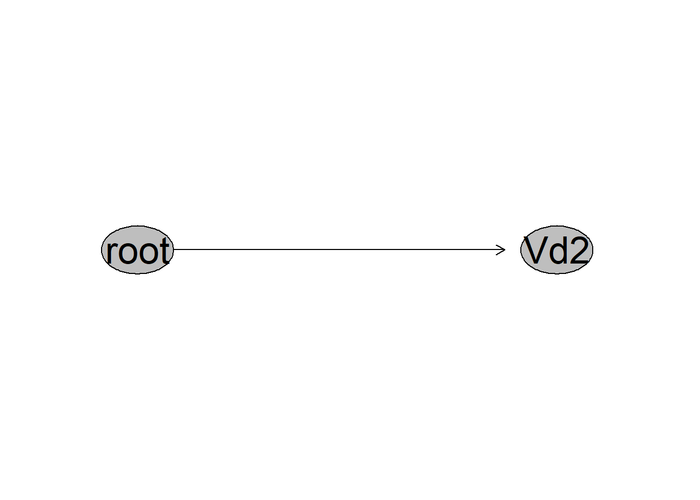
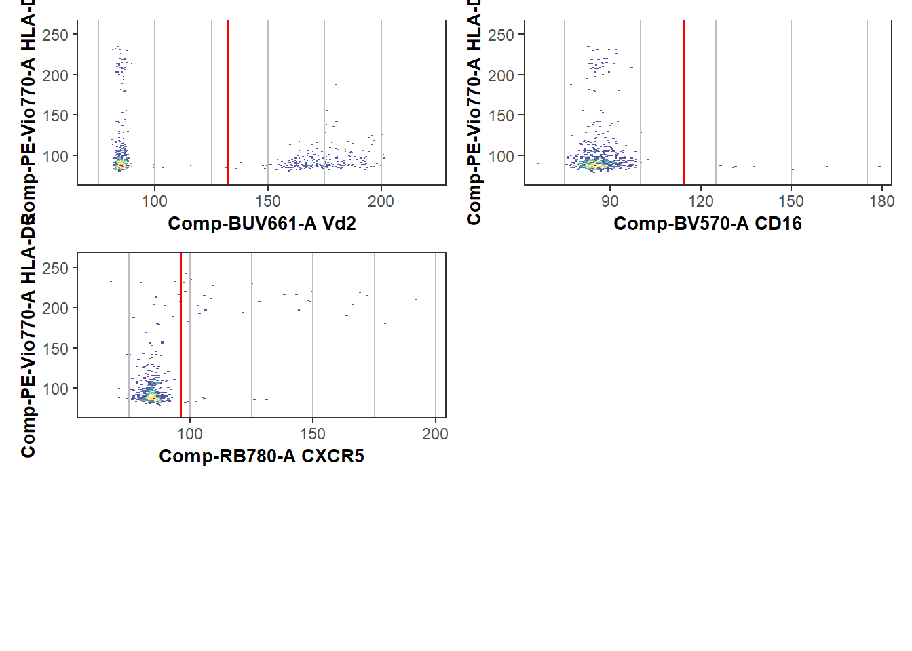
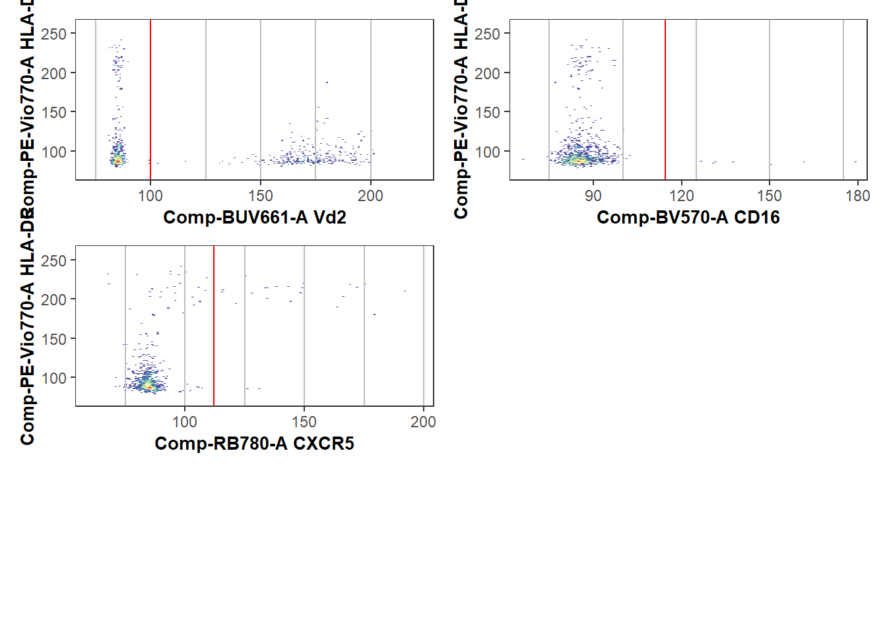
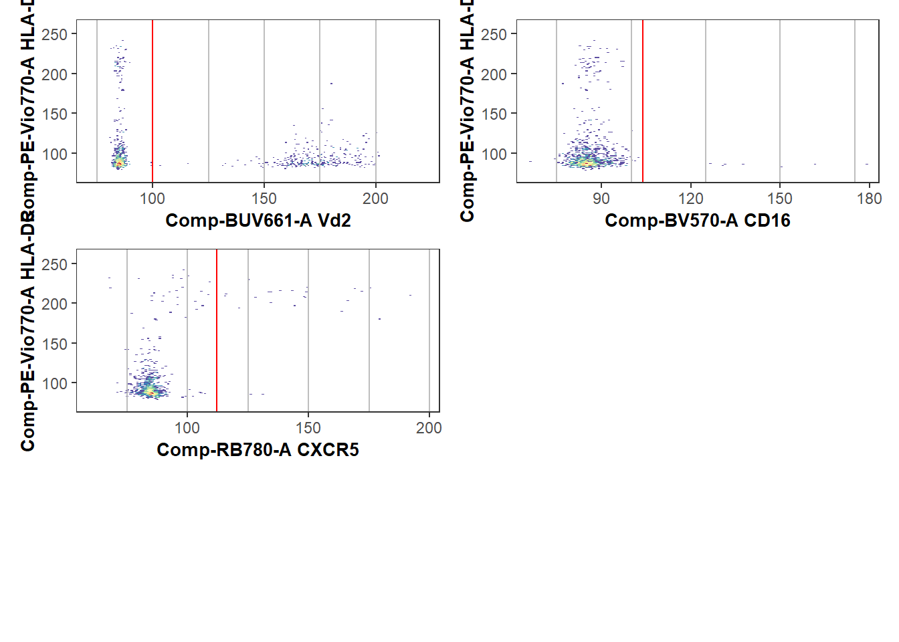
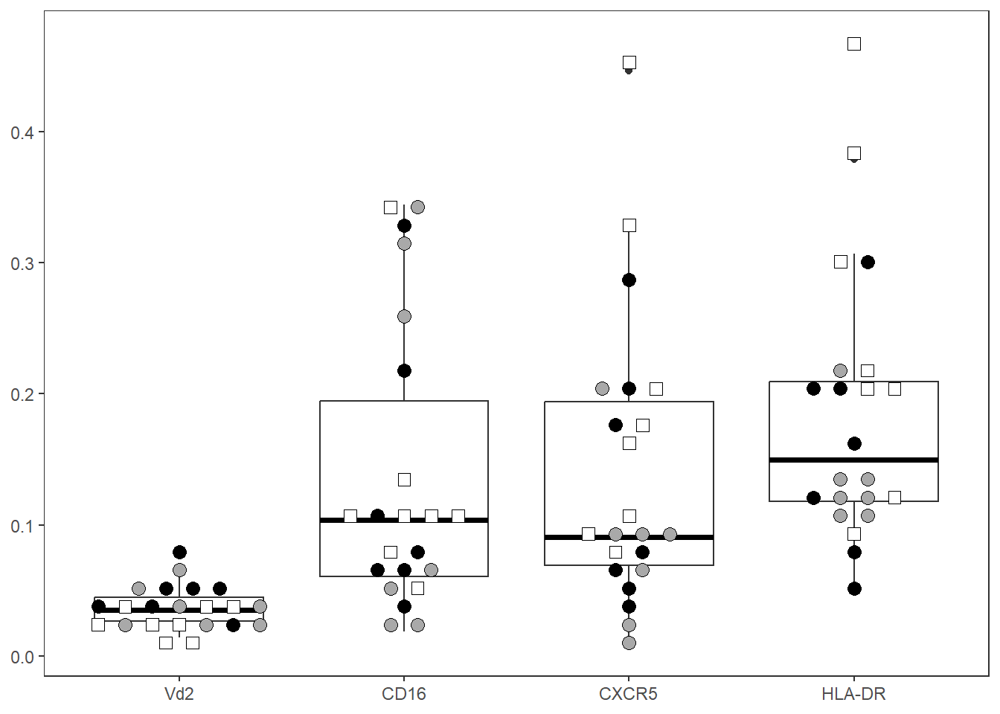
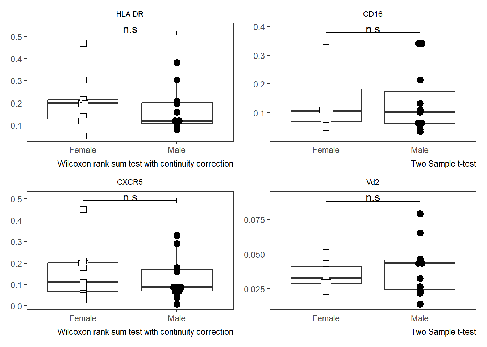

knitr::opts_chunk$set(
eval = FALSE,
collapse = TRUE,
comment = "#>"
)Setup
Installing Coereba
We are in the process of preparing Coereba to submit to Bioconductor later this year. Until then, the developmental version can be installed via GitHub.
if(!require("remotes")){install.packages("remotes")}
remotes::install_github("https://github.com/DavidRach/Coereba")
# install.packages("BiocManager")
# BiocManager::install("Coereba")Load Required Libraries
Coereba primarily relies on the infrastructure provided flowWorkspace and other Bioconductor cytometry R packages. It additionally leverages various tidyverse packages available via CRAN. Before starting, it is important to make sure all required packages are first installed, and that library is called for each to make them available.
# CRAN packages: install.packages("ThePackageName")
# library(dplyr)
# library(purrr)
# library(stringr)
# library(ggplot2)
# library(gt)
# library(plotly)
# library(htmltools)
# library(data.table)
# Bioconductor packages: BiocManager::install("ThePackageName")
library(Coereba)
#library(flowCore)
#library(flowWorkspace)
#library(openCyto)
#library(ggcyto) Locate your files
You will next need to provide to your computer the location where your .fcs files of interest are stored. An example of how the author does this for the various computer operating systems is shown below. Please modify the file.paths accordingly to match your own username and folder location.
# For Windows Operating Systems
File_Location <- file.path("C:", "Users", "JohnDoe", "Desktop", "TodaysExperiment")
FCS_Pattern <- ".fcs$"
FCS_Files <- list.files(path = File_Location, pattern = FCS_Pattern,
full.names = TRUE, recursive = FALSE)
# For Mac
# For Linux
# File_Location <- file.path("/home", "JohnDoe", "Desktop", "TodaysExperiment")For this vignette, we will be utilizing several .fcs files that are stored within Coereba’s extdata folder. These consist of unmixed .fcs files from a 32 fluorophore Spectral Flow Cytometry panel. We manually gated down to CD4-CD8- (DN) T cells, from which we downsampled up to 1000 cells to create a sufficiently small dataset to use for the R package documentation.
File_Location <- system.file("extdata", package = "Coereba")
FCS_Pattern <- ".fcs$"
FCS_Files <- list.files(path = File_Location, pattern = FCS_Pattern,
full.names = TRUE, recursive = FALSE)
head(FCS_Files, 3)[1] "C:/Users/12692/AppData/Local/R/win-library/4.5/Coereba/extdata/2025_07_26_AB_02_INF052_00_SEB.fcs"
[2] "C:/Users/12692/AppData/Local/R/win-library/4.5/Coereba/extdata/2025_07_26_AB_02_INF100_00_SEB.fcs"
[3] "C:/Users/12692/AppData/Local/R/win-library/4.5/Coereba/extdata/2025_07_26_AB_02_INF179_00_SEB.fcs"Creating a GatingSet
flowWorkspace and openCyto
Working with the unmixed .fcs files we have identified above, we will group them into a GatingSet object where we can further interact with them.
UnmixedFCSFiles <- FCS_Files
UnmixedCytoSet <- load_cytoset_from_fcs(UnmixedFCSFiles, truncate_max_range = FALSE,
transformation = FALSE)
UnmixedGatingSet <- GatingSet(UnmixedCytoSet)
UnmixedGatingSetA GatingSet with 30 samplesNow that we have created a GatingSet object, we will generate list of the fluorophores and markers present. We will then exclude from this list markers that don’t require transformation (FSC, SSC, etc.) For this example, we will biexponentially transform our data using the flowWorkspace flowWorkspace::flowjo_biexp_trans().
Markers <- colnames(UnmixedCytoSet)
KeptMarkers <- Markers[-grep("Time|FS|SC|SS|Original|-W$|-H$|AF", Markers)]
MyBiexponentialTransform <- flowjo_biexp_trans(channelRange = 256, maxValue = 1000000,
pos = 4.5, neg = 0, widthBasis = -1000)
TransformList <- transformerList(KeptMarkers, MyBiexponentialTransform)
UnmixedGatingSet <- transform(UnmixedGatingSet, TransformList)For this example, we will apply a openCytogating template that can be found in the extdata folder to apply a gate to distinguish Vdelta2 cells from other DN T cells.
UnmixedGates <- fread(file.path(path = File_Location, pattern = 'GatesUnmixed.csv'))
UnmixedGating <- gatingTemplate(UnmixedGates)Adding population:Vd2
gt_gating(UnmixedGating, UnmixedGatingSet)Gating for 'Vd2'done!done.finished.
plot(UnmixedGatingSet)
We can additionally verify that the gating of the cell populations of interest was correct, by visualizing the gates using ggcyto or the Luciernaga::Utility_GatingPlots function from the Luciernaga package.
library(Luciernaga)
MyPlot <- Utility_GatingPlots(x=UnmixedGatingSet[4], sample.name=c("GROUPNAME", "TUBENAME"),
removestrings=".fcs", subset="root", gtFile=UnmixedGates,
DesiredGates=NULL, returnType="plots", outpath = getwd(),
therows=1, thecolumns=2)
MyPlot[[1]]
CytoML
An alternative approach to creating a new GatingSet with openCyto, would to be to import an existing FlowJo workspace using CytoML. The workflow for this approach would look something as follows:
# For Windows Operating Systems
folder <- file.path("C:", "Users", "JohnDoe", "Desktop", "TodaysExperiment")
wsp <- list.files(pattern=".wsp", full.names=TRUE)
library(CytoML)
ws <- open_flowjo_xml(wsp[1])
CytoML_GS <- flowjo_to_gatingset(ws, name=1, path = folder, additional.keys="GROUPNAME")
CytoML_GSA GatingSet with 30 samples
library(Luciernaga)
MyPlot <- Utility_GatingPlots(x=CytoML_GS[27], sample.name=c("GROUPNAME", "TUBENAME"),
removestrings=".fcs", subset="root", gtFile=UnmixedGates,
DesiredGates=NULL, returnType="plots", outpath = getwd(),
therows=1, thecolumns=2)
MyPlot[[1]]
Coereba
Having set up a GatingSet and applied the transformations and gates, we can now proceed to the main Coereba workflow.
For this example, we will focus on just 4 of the 32 markers, CD16 (BV570), CXCR5 (RB780), HLA-DR(PE-Vio770), and Vdelta2 (BUV661). Most cord DN T cells are negative for these markers, but 5-25% are positive, so they are good examples to showcase the gate adjustment mechanisms. The process when working with all 32-markers is similar, but will take a little more compute time.
# BV570=CD16, RB780=CXCR5, BUV661=Vd2, PE-Vio770=HLA-DR
MarkersForToday <- c("Comp-BV570-A", "Comp-RB780-A", "Comp-BUV661-A", "Comp-PE-Vio770-A")Return a Coereba Gate cutoff template
The first step is to create a .csv file, containing the individual specimens, and the individual markers of interest. Each cell within the .csv file will correspond to the MFI for a given marker for a given individual where positive expression of a marker transitions to becoming a negative (referred here to as a splitpoint).
These could be specified out individually, or derrived in an automated fashion. In Coereba, we leverage the openCyto automated gating functions (primarily the gate_mindensity option) to save us from the eye-strain of typing everything out. We will run the Coereba_GateCutoffs() function on each specimen in the GatingSet, and use the dplyr packages bind_rows()to gather the rows into a data.frame object. We in turn can save this as a .csv for later use (or minor hand editing).
# Designate a location file.path to save the calculated splitpoints .csv to.
StorageLocationForSplitpoints <- file.path("C:", "Users", "JohnDoe", "Desktop")
# We will use a temp() folder for this documentation example.
StorageLocationForSplitpoints <- tempdir()
TheGateCutoffs <- purrr::map(.x=UnmixedGatingSet, .f=Coereba_GateCutoffs,
subset="root", sample.name=c("GROUPNAME"), desiredCols=MarkersForToday) |> bind_rows()
TheFileName <- file.path(StorageLocationForSplitpoints, "InitialGates.csv")
write.csv(TheGateCutoffs, TheFileName, row.names=FALSE)
TheGateCutoffs specimen Comp-BV570-A Comp-RB780-A Comp-BUV661-A Comp-PE-Vio770-A
1 INF052 95.99572 79.81768 92.62814 129.9561
2 INF100 103.33433 94.25437 114.69530 116.6564
3 INF179 109.89267 128.23631 110.01708 150.9991
4 NY068_02 114.44753 96.39710 132.30234 164.5997
5 INF134 124.42033 91.52706 93.54602 151.1548
6 INF148 95.80705 98.21272 92.21258 156.4832
7 INF191 97.24318 95.13298 90.39015 150.5763
8 NY068_03 119.66857 94.20034 133.03712 166.7616
9 INF124 103.73583 97.52455 92.24351 135.2992
10 INF149 102.38780 90.80628 91.17560 134.0682
11 INF169 98.05572 96.86912 91.20649 143.2990
12 NY068_04 101.86016 148.96872 134.22594 163.1704
13 INF019 118.66055 119.15168 111.03801 150.8361
14 INF032 100.12555 128.39530 90.89821 155.1842
15 INF180 109.81433 134.41540 123.40675 151.3544
16 NY068_05 129.94157 124.96124 134.95695 180.8834
17 INF155 127.16077 92.08128 90.55976 135.4164
18 INF158 103.49512 123.41416 100.13277 151.0280
19 INF159 102.40065 93.02662 115.63440 151.8577
20 NY068_06 134.49746 95.33254 132.96382 165.9432
21 INF023 127.91245 109.67568 108.11141 133.5714
22 INF030 125.73654 138.79580 92.29818 171.0362
23 NY068_07 119.26432 116.28047 134.65951 165.2359
24 INF166 100.86925 128.41642 91.56946 145.7076
25 INF199 96.16446 91.66441 90.65000 174.1244
26 INF207 130.57312 78.51149 93.95175 140.9981
27 NY068_08 111.68304 112.19372 135.69086 175.6439
28 INF614 92.62075 103.21807 91.92536 150.7596
29 INF622 104.76776 105.21465 133.13021 134.9934
30 NY068_09 126.99610 100.68112 134.55885 168.3020With these intial split points calculated, we can visualize how well the splitpoints were calculated by plotting them as red-lines using the Luciernaga packages Utility_NbyNPlots() (visualizing all marker combinations for an individual specimen) and Utility_UnityPlots() (visualizing a marker combination across all specimens) functions. The resulting plots can be returned to R using either the returntype= “plots” or “patchwork” arguments, or saved to the directory by providing the “pdf” argument instead.
# Designate a location
StorageLocationForPlotPDF <- file.path("C:", "Users", "JohnDoe", "Desktop")
# We will use a temp() folder for this documentation example.
StorageLocationForPlotPDF <- tempdir()
Plot <- Utility_NbyNPlots(x=UnmixedGatingSet[4], sample.name=c("GROUPNAME"), experiment="ABs",
condition="DNs", removestrings=".fcs", marginsubset="root", gatesubset="root",
ycolumn="Comp-PE-Vio770-A", bins=150, clearance=0.1,
gatelines=TRUE, reference=TheGateCutoffs, outpath=StorageLocationForPlotPDF, returntype="patchwork")When a marker has distinct positive or negative markers, the initial estimated location works well.
Plot$`1`
However, when everything is uniformly positive or negative, or more subtle shift, these estimated locations can be quite off, and the respective splitpoints will need to be corrected. If a particular marker(s) is consistently off, we can redo the splitpoints for individual markers by providing gate_range arguments to constrain the mindensity to searching within a particular area.
The simplest way to do this is to set the Coereba_GateCutoffs() returnTemplate argument to TRUE, which will return a TemplateForGates.csv based off the openCyto template .csv.
# Designate a location file.path to save the template to.
StorageLocationForTemplate <- file.path("C:", "Users", "JohnDoe", "Desktop")
# We will use a temp() folder for this documentation example.
StorageLocationForTemplate <- tempdir()
ReturnATemplate <- Coereba_GateCutoffs(x=UnmixedGatingSet[1],
subset="root", sample.name="GROUPNAME", desiredCols=MarkersForToday,
returnTemplate=TRUE, outpath=StorageLocationForTemplate)
TheTemplate <- list.files(StorageLocationForTemplate,
pattern="TemplateForGates.csv", full.names=TRUE)
TheTemplateCSV <- read.csv(TheTemplate, check.names=FALSE) alias pop parent dims gating_method gating_args
1 Comp-BV570-A - root Comp-BV570-A gate_mindensity NA
2 Comp-RB780-A - root Comp-RB780-A gate_mindensity NA
3 Comp-BUV661-A - root Comp-BUV661-A gate_mindensity NA
4 Comp-PE-Vio770-A - root Comp-PE-Vio770-A gate_mindensity NA
collapseDataForGating groupBy preprocessing_method preprocessing_args
1 FALSE NA NA NA
2 FALSE NA NA NA
3 FALSE NA NA NA
4 FALSE NA NA NAWe can then manually update with the gate_range arguments.
#On your own workstation
UpdatedTemplatePath <- file.path("C:", "Users", "JohnDoe", "Desktop",
"UpdatedTemplateForGates.csv")
# For our documentation's example
folder <- system.file("extdata", package = "Coereba")
UpdatedTemplatePath <- list.files(folder, pattern="UpdatedTemplateForGates.csv", full.names=TRUE)
UpdatedTemplate <- read.csv(UpdatedTemplatePath, check.names=FALSE)
UpdatedTemplate alias pop parent dims gating_method
1 Comp-BV570-A - root Comp-BV570-A gate_mindensity
2 Comp-RB780-A - root Comp-RB780-A gate_mindensity
3 Comp-BUV661-A - root Comp-BUV661-A gate_mindensity
4 Comp-PE-Vio770-A - root Comp-PE-Vio770-A gate_mindensity
gating_args collapseDataForGating groupBy preprocessing_method
1 gate_range=c(100,115) FALSE NA NA
2 gate_range=c(100,115) FALSE NA NA
3 gate_range=c(100,115) FALSE NA NA
4 gate_range=c(120,135) FALSE NA NA
preprocessing_args
1 NA
2 NA
3 NA
4 NAWith this done, we can provide it back to Coereba_GateCutoffs() with the GateOverwrite argument set to TRUE. This will restart the calculation of the splitpoints.
TheUpdatedGateCutoffs <- purrr::map(.x=UnmixedGatingSet, .f=Coereba_GateCutoffs,
subset="root", sample.name="GROUPNAME", desiredCols=MarkersForToday,
GatingTemplate=UpdatedTemplatePath, GateOverwrite=TRUE) %>% bind_rows()
# Designate a location file.path to save the template to.
StorageLocationForUpdatedSplitpoints <- file.path("C:", "Users", "JohnDoe", "Desktop")
# We will use a temp() folder for this documentation example.
StorageLocationForUpdatedSplitpoints <- tempdir()
SecondGates <- file.path(StorageLocationForUpdatedSplitpoints, "SecondGates.csv")
write.csv(TheUpdatedGateCutoffs, SecondGates, row.names=FALSE)
TheUpdatedGateCutoffs specimen Comp-BV570-A Comp-RB780-A Comp-BUV661-A Comp-PE-Vio770-A
1 INF052 106.4243 113.5925 113.6929 129.9561
2 INF100 103.3343 106.1959 114.6953 125.4605
3 INF179 109.8927 100.0000 110.0171 120.0000
4 NY068_02 114.4475 112.1331 100.0000 133.7100
5 INF134 100.0000 113.8992 101.3027 125.8119
6 INF148 109.9491 112.7546 110.7753 120.0000
7 INF191 112.2095 111.5551 104.6742 121.1411
8 NY068_03 104.7751 105.4302 100.0000 120.0000
9 INF124 103.7358 103.3443 102.5415 120.0000
10 INF149 102.3878 113.7956 102.5606 134.0682
11 INF169 111.7433 114.8728 109.4655 120.0000
12 NY068_04 101.8602 114.4828 100.0000 120.0000
13 INF019 100.0000 110.0912 111.0380 124.7991
14 INF032 100.1255 113.5904 100.3742 120.0000
15 INF180 109.8143 100.0000 113.1625 120.0000
16 NY068_05 113.1065 107.7955 100.0000 129.2545
17 INF155 110.6196 104.2215 108.2798 132.0553
18 INF158 103.4951 105.1166 100.1328 125.5335
19 INF159 102.4007 109.3739 106.1045 120.0000
20 NY068_06 102.9558 103.3860 100.0000 120.0000
21 INF023 100.0000 109.6757 108.1114 133.5714
22 INF030 100.0000 112.3273 108.5369 129.9226
23 NY068_07 100.0000 103.3227 100.0000 120.0000
24 INF166 100.8692 100.0000 108.1121 120.0000
25 INF199 108.9003 101.8914 111.4071 128.5388
26 INF207 100.0000 108.6026 100.8434 125.9516
27 NY068_08 111.6830 112.1937 100.0000 120.0000
28 INF614 108.5193 103.2181 100.6354 125.9203
29 INF622 104.7678 105.2147 103.3615 134.9934
30 NY068_09 100.0000 100.6811 100.0000 120.0000This ultimately allows the splitpoint gate estimates to be closer to the true positive/negative split, resulting in less total adjustments that need to be done via the Coereba Shiny app.
StorageLocationForPlotPDF <- tempdir()
UpdatedPlot <- Utility_NbyNPlots(x=UnmixedGatingSet[4], sample.name=c("GROUPNAME"), experiment="ABs",
condition="DNs", removestrings=".fcs", marginsubset="root", gatesubset="root",
ycolumn="Comp-PE-Vio770-A", bins=150, clearance=0.1,
gatelines=TRUE, reference=TheUpdatedGateCutoffs, outpath=StorageLocationForPlotPDF, returntype="patchwork")
UpdatedPlot$`1`
Coereba_App
With the estimated splitpoints having been calculated, we still need to make sure to correct the location for the odd specimen that is of. We have created a R Shiny App to facilitate this process. When provided with the .csv of splitpoints, it will load in the GatingSet object, and plot an interactive version of Utility_UnityPlot() from the Luciernaga package, visualizing the splitpoint for a given marker across all individuals as red vertical lines. These can then be updated via the graphical user interface (GUI) by clicking just above the axis.
First off, remember the location you saved the splitpoints .csv, as the Shiny App will ask you to find it later:
# Wherever you stored it
File_Location <- file.path("C:", "Users", "JohnDoe", "Desktop")
# For our example documentation
File_Location <- system.file("extdata", package = "Coereba")
TheCSV <- file.path(File_Location, "SecondGates.csv")
TheCSVData <- read.csv(TheCSV, check.names=FALSE)
head(TheCSVData) specimen Comp-BV570-A Comp-RB780-A Comp-BUV661-A Comp-PE-Vio770-A
1 INF052 106.4243 113.5925 113.6929 129.9561
2 INF100 103.3343 106.1959 114.6953 125.4605
3 INF179 109.8927 100.0000 110.0171 120.0000
4 NY068_02 114.4475 112.1331 100.0000 133.7100
5 INF134 100.0000 113.8992 101.3027 125.8119
6 INF148 109.9491 112.7546 110.7753 120.0000Similarly, make sure to remember what you called your GatingSet (“UnmixedGatingSet” for our example), and the sample.name keyword used to identify individual specimens, as you will need to also provide these values to the app.
We will now launch the Shiny App by calling the Coereba_App() function
#library(DT)
#library(plotly)
#library(shiny)
#library(shinydashboard)
Coereba_App()Upon launch, you land inside the Upload CSV File tab (located on the upper left). Go ahead and click on the Import .csv button.

Proceed to find and upload your SecondGates.csv equivalent (containing the updated splitpoints based on the gate_range constraints) by navigating to the storage folder location and select it. Once done, the contents will appear in the space on the right.

Next, you will select the “Upload a Gating Set” tab on the upper left.
What we now see is a way to provide arguments to the interactive version of Utility_UnityPlots()
Enter the information about your GatingSet (“UnmixedGatingSet” for this example), select your desired x and y parameters (“Comp-BUV661-A”, etc), and the Sample.Name keyword that designates the respective specimens. The bins argument will adjust how th cells are visualized, with higher numbers being finer detail. Clearance is a proportion used to create additional space around the edge of the plot, which is set based on the values for the respective subset provided by the margin argument. The cells being plotted come from the “gate” subset box. Finally, click Display Estimated Gate Cutoffs to visualize the splitpoints as vertical red lines.

Once this is done, click Generate Plots. If you view the console of the main R session, you will see the Utility_NbyNplot messages running as the plots are generated. How long it will take to load in the plots depends on the number of specimens, and the size of the files. Once the plots are loaded, wait a couple of seconds until you can hover with your mouse over the plots before clicking to avoid having the App freeze up.

For standard workflow, scroll examining how the splitpoints were assigned for the individual samples. When you encounter a splitpoint line that was incorrectly set, hover just above the just above the x-axis for the correct location, and click on the spot with your mouse (see blue arrow for an example).

When you click just above the axis for the corrected splitpoint, you should see a click event captured message pop up in the console window of the Main R environment. If you click to far above the axis, you will not see this message displayed. Similarly, this message can be used to remember at what sample you left off when scrolling. All these clicks will save the coordinate as a splitpoint for that given marker and individual to a data.frame we will see on the next tab.
In terms of accidentally clicking the wrong location, only the last click for a respective sample will be used, so in case of a misclick, reclick on the correct location.

Once you have corrected everything for a particular marker, switch down to the next x-axis marker, and regenerate the plots. Once they are loaded, proceed to correct the splitpoints for each additional marker.

Once this is complete, navigate to the Click Data tab on the upper left. You will see the click events in their totality. You will next need to export this data.

Due to computer safety reasons, Shiny Apps are not allowed to write directly to your computer file system. So you will need to manually type in the file name and the file.path to a storage location. Once this is done, click “Export Click Data”. If this was done successfully, you should see the following notice appear.

Finally, close out of the Shiny window, and hit the red stop button on the right-hand of the console to return back to Positron.
When working with a large dataset, we have observed the ShinyApp start to slow after a couple markers. When this occurs, save the click file to your destination folder, close the ShinyApp, and relaunch. Correct a couple additional markers, and save the Export Click Data again with a different name. After everything is gated, the same function used to update the Splitpoint.csv can be used to grab all .csv files from within a folder in a single go.
(Note for developers: Shiny relies heavily on reactive R, which is not the maintainer’s coding forte, so some additional work to speed things up behind the scenes is likely required. If this is your area of expertise, feel free to contribute!)
Updating the Splitpoints
Having gone through and corrected the splitpoints with Coereba_App(), it is time to convert your validated click-data and update the SecondGates.csv to reflect the changes. To facilitate this, we will use the Coereba_UpdateGates() function. This can be used to update for either a single click-data .csv, or the file.path to the folder containing all the click-data .csv files in one go.
In our case, we will update using the saved click-data from above stored inside the extdata folder.
# Wherever you stored it
File_Location <- file.path("C:", "Users", "JohnDoe", "Desktop")
# For our example documentation
File_Location <- system.file("extdata", package = "Coereba")
TheOldCSV <- file.path(File_Location, "SecondGates.csv")
TheClickInfo <- file.path(File_Location, "CorrectSplitpointLocations.csv")
TheClickData <- read.csv(TheClickInfo, check.names=FALSE)
TheClickData Plot_Name X_Label X_Coordinate Time
1 INF179 Comp-BV570-A 102 2025-11-30 14:35:32.16719
2 NY068_02 Comp-BV570-A 104 2025-11-30 14:35:34.988784
3 INF148 Comp-BV570-A 100 2025-11-30 14:35:38.030139
4 INF149 Comp-BV570-A 104 2025-11-30 14:35:43.327136
5 INF169 Comp-BV570-A 100 2025-11-30 14:35:45.103615
6 NY068_07 Comp-BV570-A 104 2025-11-30 14:35:53.786732
7 NY068_09 Comp-BV570-A 104 2025-11-30 14:36:01.280463
8 INF052 Comp-RB780-A 102 2025-11-30 14:37:52.210564
9 INF100 Comp-RB780-A 100 2025-11-30 14:37:55.166208
10 NY068_03 Comp-RB780-A 100 2025-11-30 14:38:03.626395
11 INF169 Comp-RB780-A 104 2025-11-30 14:38:08.80295
12 NY068_04 Comp-RB780-A 106 2025-11-30 14:38:11.201174
13 INF019 Comp-RB780-A 100 2025-11-30 14:38:13.839399
14 INF032 Comp-RB780-A 104 2025-11-30 14:38:15.777844
15 NY068_05 Comp-RB780-A 102 2025-11-30 14:38:20.034655
16 INF155 Comp-RB780-A 98 2025-11-30 14:38:21.464544
17 INF158 Comp-RB780-A 100 2025-11-30 14:38:23.338806
18 INF052 Comp-BUV661-A 100 2025-11-30 14:39:17.986655
19 INF100 Comp-BUV661-A 100 2025-11-30 14:39:19.746232
20 INF179 Comp-BUV661-A 98 2025-11-30 14:39:21.239516
21 INF191 Comp-BUV661-A 102 2025-11-30 14:39:27.352087
22 INF124 Comp-BUV661-A 100 2025-11-30 14:39:29.262508
23 INF169 Comp-BUV661-A 100 2025-11-30 14:39:31.839288
24 INF019 Comp-BUV661-A 100 2025-11-30 14:39:34.195555
25 INF180 Comp-BUV661-A 102 2025-11-30 14:39:36.821013
26 INF155 Comp-BUV661-A 100 2025-11-30 14:39:38.969446
27 INF159 Comp-BUV661-A 100 2025-11-30 14:39:41.252016
28 INF023 Comp-BUV661-A 100 2025-11-30 14:39:42.898831
29 INF030 Comp-BUV661-A 100 2025-11-30 14:39:45.107159
30 INF166 Comp-BUV661-A 104 2025-11-30 14:39:47.954736
31 INF199 Comp-BUV661-A 96 2025-11-30 14:39:50.678337
32 INF622 Comp-BUV661-A 98 2025-11-30 14:39:54.817167
33 NY068_02 Comp-PE-Vio770-A 128 2025-11-30 14:40:40.675504
34 NY068_03 Comp-PE-Vio770-A 132 2025-11-30 14:40:44.906669
35 INF149 Comp-PE-Vio770-A 120 2025-11-30 14:40:48.726542
36 NY068_04 Comp-PE-Vio770-A 128 2025-11-30 14:40:50.651213
37 NY068_05 Comp-PE-Vio770-A 132 2025-11-30 14:40:55.607554
38 NY068_06 Comp-PE-Vio770-A 124 2025-11-30 14:40:59.375889
39 NY068_07 Comp-PE-Vio770-A 130 2025-11-30 14:41:03.064329
40 NY068_08 Comp-PE-Vio770-A 128 2025-11-30 14:41:06.183731
41 NY068_09 Comp-PE-Vio770-A 132 2025-11-30 14:41:09.082866By comparison, the data from SecondGates that will be updated
TheOldData <- read.csv(TheOldCSV, check.names=FALSE)
TheOldData specimen Comp-BV570-A Comp-RB780-A Comp-BUV661-A Comp-PE-Vio770-A
1 INF052 106.4243 113.5925 113.6929 129.9561
2 INF100 103.3343 106.1959 114.6953 125.4605
3 INF179 109.8927 100.0000 110.0171 120.0000
4 NY068_02 114.4475 112.1331 100.0000 133.7100
5 INF134 100.0000 113.8992 101.3027 125.8119
6 INF148 109.9491 112.7546 110.7753 120.0000
7 INF191 112.2095 111.5551 104.6742 121.1411
8 NY068_03 104.7751 105.4302 100.0000 120.0000
9 INF124 103.7358 103.3443 102.5415 120.0000
10 INF149 102.3878 113.7956 102.5606 134.0682
11 INF169 111.7433 114.8728 109.4655 120.0000
12 NY068_04 101.8602 114.4828 100.0000 120.0000
13 INF019 100.0000 110.0912 111.0380 124.7991
14 INF032 100.1255 113.5904 100.3742 120.0000
15 INF180 109.8143 100.0000 113.1625 120.0000
16 NY068_05 113.1065 107.7955 100.0000 129.2545
17 INF155 110.6196 104.2215 108.2798 132.0553
18 INF158 103.4951 105.1166 100.1328 125.5335
19 INF159 102.4007 109.3739 106.1045 120.0000
20 NY068_06 102.9558 103.3860 100.0000 120.0000
21 INF023 100.0000 109.6757 108.1114 133.5714
22 INF030 100.0000 112.3273 108.5369 129.9226
23 NY068_07 100.0000 103.3227 100.0000 120.0000
24 INF166 100.8692 100.0000 108.1121 120.0000
25 INF199 108.9003 101.8914 111.4071 128.5388
26 INF207 100.0000 108.6026 100.8434 125.9516
27 NY068_08 111.6830 112.1937 100.0000 120.0000
28 INF614 108.5193 103.2181 100.6354 125.9203
29 INF622 104.7678 105.2147 103.3615 134.9934
30 NY068_09 100.0000 100.6811 100.0000 120.0000We can then run Coereba_UpdateGates() and examine how the PE-Vio770 values are correspondingly updated.
ShinyGatesSplitpoints <- Coereba_UpdateGates(Clicks=TheClickInfo, Old=TheOldCSV,
export=FALSE, outpath=NULL, fileName="UpdatedCSV")
ShinyGatesSplitpoints specimen Comp-BV570-A Comp-RB780-A Comp-BUV661-A Comp-PE-Vio770-A
1 INF052 106.4243 102.0000 100.0000 129.9561
2 INF100 103.3343 100.0000 100.0000 125.4605
3 INF179 102.0000 100.0000 98.0000 120.0000
4 NY068_02 104.0000 112.1331 100.0000 128.0000
5 INF134 100.0000 113.8992 101.3027 125.8119
6 INF148 100.0000 112.7546 110.7753 120.0000
7 INF191 112.2095 111.5551 102.0000 121.1411
8 NY068_03 104.7751 100.0000 100.0000 132.0000
9 INF124 103.7358 103.3443 100.0000 120.0000
10 INF149 104.0000 113.7956 102.5606 120.0000
11 INF169 100.0000 104.0000 100.0000 120.0000
12 NY068_04 101.8602 106.0000 100.0000 128.0000
13 INF019 100.0000 100.0000 100.0000 124.7991
14 INF032 100.1255 104.0000 100.3742 120.0000
15 INF180 109.8143 100.0000 102.0000 120.0000
16 NY068_05 113.1065 102.0000 100.0000 132.0000
17 INF155 110.6196 98.0000 100.0000 132.0553
18 INF158 103.4951 100.0000 100.1328 125.5335
19 INF159 102.4007 109.3739 100.0000 120.0000
20 NY068_06 102.9558 103.3860 100.0000 124.0000
21 INF023 100.0000 109.6757 100.0000 133.5714
22 INF030 100.0000 112.3273 100.0000 129.9226
23 NY068_07 104.0000 103.3227 100.0000 130.0000
24 INF166 100.8692 100.0000 104.0000 120.0000
25 INF199 108.9003 101.8914 96.0000 128.5388
26 INF207 100.0000 108.6026 100.8434 125.9516
27 NY068_08 111.6830 112.1937 100.0000 128.0000
28 INF614 108.5193 103.2181 100.6354 125.9203
29 INF622 104.7678 105.2147 98.0000 134.9934
30 NY068_09 104.0000 100.6811 100.0000 132.0000
# Designate a location file.path to save the Shiny Updated Splitpoints to
StorageLocationForShinyUpdatedSplitpoints <- file.path("C:", "Users", "JohnDoe", "Desktop")
# We will use a temp() folder for this documentation example.
StorageLocationForShinyUpdatedSplitpoints <- tempdir()
ShinyGatesPath <- file.path(StorageLocationForShinyUpdatedSplitpoints, "ShinyGates.csv")
write.csv(ShinyGatesSplitpoints, ShinyGatesPath, row.names=FALSE)We in turn can validate this further by by re-running Luciernaga Utility_NbyNPlots() or Utility_UnityPlots() using the updated GateCutoff.csv and see how things look now following our intervention.
StorageLocationForPlotPDF <- tempdir()
UpdatedPlotAfterShiny <- Utility_NbyNPlots(x=UnmixedGatingSet[4], sample.name=c("GROUPNAME"), experiment="ABs",
condition="DNs", removestrings=".fcs", marginsubset="root", gatesubset="root",
ycolumn="Comp-PE-Vio770-A", bins=150, clearance=0.1,
gatelines=TRUE, reference=ShinyGatesSplitpoints, outpath=StorageLocationForPlotPDF, returntype="patchwork")
UpdatedPlotAfterShiny$`1`
Coereba
With the gate locations now finalized, it’s time to run Coereba and classify each individual cell within a specimen by it’s marker expression relative to their respective splitpoint location. Cells that share marker expressions ultimately end up in the same clusters. We will use the Utility_Coereba() function for this process, providing both the validated ShinyGates and our GatingSet.
# Wherever you stored it
File_Location <- file.path("C:", "Users", "JohnDoe", "Desktop")
# For our example documentation
File_Location <- system.file("extdata", package = "Coereba")
CheckedGates <- file.path(File_Location, "ShinyGates.csv")
CoerebaData <- Utility_Coereba(gs=UnmixedGatingSet, subsets="root",
sample.name="GROUPNAME", reference=CheckedGates, starter="Comp-PE-Vio770-A",
inverse.transform = TRUE, returnType="data", Individual=FALSE, outpath=NULL,
columns = MarkersForToday)
head(CoerebaData) Time SSC-W SSC-H SSC-A FSC-W FSC-H FSC-A SSC-B-W
1 0.007250432 757468.7 319916 403877.2 723836.3 1314920 1586311 759363.8
2 0.049536157 764963.2 433967 553281.3 713654.9 1075821 1279608 736022.6
3 0.158876628 829243.2 337209 466047.1 731967.6 1151849 1405194 789358.2
4 0.086781256 851596.2 651951 925331.7 786383.0 1359889 1782323 824939.2
5 0.147267058 710492.4 502576 595127.4 733292.0 1190929 1455498 685358.0
6 0.003717238 734286.3 321066 392924.0 722650.5 1183293 1425179 725114.2
SSC-B-H SSC-B-A Comp-BUV395-A Comp-BUV563-A Comp-BUV615-A Comp-BUV661-A
1 221231 279991.4 438.7249 1040.404 -680.8043 -129.44624
2 300984 369218.3 829.8121 7123.970 -1994.0029 -232.51152
3 319848 420791.0 1280.9078 3803.623 713.0327 510.93674
4 625532 860043.2 -439.4222 30278.248 -1139.0708 315.45111
5 371090 423882.5 221.7194 19312.646 -140.6563 13.20995
6 239985 290027.6 908.4125 2258.362 -2010.0111 377.78735
Comp-BUV737-A Comp-BUV805-A Comp-Pacific Blue-A Comp-BV480-A Comp-BV570-A
1 2549.84912 1215.4592 282.3041 -572.2485 153.71027
2 -485.93094 -154.2776 390.7733 244.7173 -216.41353
3 26.77089 831.5299 -551.6248 61308.6914 466.36249
4 7057.75732 536.5324 -239.2623 7667.9570 6461.04248
5 7611.88867 -75.4399 -201.6307 -519.2786 -322.98361
6 443.79602 -672.4197 -171.0772 1798.1503 -65.80224
Comp-BV605-A Comp-BV650-A Comp-BV711-A Comp-BV750-A Comp-BV786-A
1 68198.375 1023.61847 -731.8307 1000.20520 -645.06366
2 77018.008 864.49603 1143.2937 216.37506 332.01163
3 47829.953 659.00372 -421.0473 376.08987 2430.74023
4 82163.375 -612.73761 738.0031 300.63382 228.46538
5 9739.221 -24.65056 517.4077 -571.34906 1850.53870
6 80161.500 1256.53894 395.2672 -19.04926 -39.42794
Comp-Alexa Fluor 488-A Comp-Spark Blue 550-A Comp-Spark Blue 574-A
1 292.3369 20156.818 13158.829
2 117.0703 19328.055 14605.964
3 303.3434 39898.215 8893.732
4 335.7022 5267.546 17848.094
5 -165.4469 19023.338 15812.108
6 361.5220 32481.230 17229.527
Comp-RB613-A Comp-RB705-A Comp-RB780-A Comp-PE-A Comp-PE-Dazzle594-A
1 5301.5435 10037.8467 34.78101 -441.28574 452.7408
2 7963.9473 -189.9107 361.52679 187.94661 543.6385
3 13183.2686 14911.6729 -470.96722 398.12598 1331.9326
4 -907.1228 820.5016 -54.07310 30.90817 -302.6173
5 -798.1833 13849.3203 200.38297 1520.73181 755.9047
6 23507.9609 539.2426 -433.34854 488.68903 1538.9198
Comp-PE-Cy5-A Comp-PE-Fire 700-A Comp-PE-Fire 744-A Comp-PE-Vio770-A
1 1367.510010 3930.5979 -191.9662 287.9828
2 9366.500977 18811.5547 430.7565 -266.3836
3 6857.629883 9814.5254 636.4847 139.9735
4 1010.400208 -598.0698 237.3655 374.5992
5 -8.154349 6291.7842 646.8314 -562.7638
6 1592.384766 2363.7073 -232.3961 1000.6408
Comp-APC-A Comp-Alexa Fluor 647-A Comp-APC-R700-A Comp-Zombie NIR-A
1 -168.0962 435.59430 169.38956 519.8437
2 197.0268 682.41821 -223.81580 1065.2352
3 -241.4765 312.44339 -25.27080 1216.3936
4 -480.8164 921.70477 -38.77645 1657.5844
5 115.7601 719.88556 196.36331 -92.2728
6 442.7861 -26.69396 386.12088 467.5624
Comp-APC-Fire 750-A Comp-APC-Fire 810-A Comp-AF-A
1 13850.8506 4013.1704 3947.339
2 5775.3535 1138.0210 3367.960
3 9555.0957 4049.2446 3144.890
4 -469.8659 1121.9797 3694.532
5 17794.6875 3649.3025 4262.999
6 11859.1738 738.9268 3819.853
Cluster specimen
1 PEVio770negBV570negRB780negBUV661neg INF052
2 PEVio770negBV570negRB780negBUV661neg INF052
3 PEVio770negBV570negRB780negBUV661neg INF052
4 PEVio770negBV570negRB780negBUV661neg INF052
5 PEVio770negBV570negRB780negBUV661neg INF052
6 PEVio770negBV570negRB780negBUV661neg INF052In the above case, we set returnType = “data”, and Individual = “FALSE”, resulting in a single data.frame containing the content for all specimens. Please refer to the documentation for Utility_Coereba() for additional options.
Save to FCS file (optional)
Once Utility_Coereba() has been run, we can send the output to an .fcs file. In this process, any metadata present will be converted over to numeric keyword format, with the actual information stored away as keywords for later retrieval. Exporting as an .fcs can can be useful when we are planning to export to an .fcs file for downstream unsupervised analysis, as it allows us to run dimensionality visualization algorithms, gate the islands, and then retrieve Coereba data as far as gating and metadata from cells within those respective islands.
# Designate a location file.path to save the Shiny Updated Splitpoints to
StorageLocationForFCS <- file.path("C:", "Users", "JohnDoe", "Desktop")
# We will use a temp() folder for this documentation example.
StorageLocationForFCS <- tempdir()
FCSFile <- Coereba::Coereba_FCSExport(data=CoerebaData, gs=UnmixedGatingSet[1],
returnType="fcs", outpath=StorageLocationForFCS, filename="CoerebaTest",
nameAppend="", Aggregate=FALSE)Likewise, once we are done with the unsupervised analysis, we can retrieve the same data back to R through the Coereba_FCS_Reversal() function.
FCSPath <- file.path(StorageLocationForFCS, "CoerebaTest.fcs")
RetrievedData <- Coereba::Coereba_FCS_Reversal(Coereba=FCSPath)
# View(RetrievedData)
head(RetrievedData, 5) Time SSC-W SSC-H SSC-A FSC-W FSC-H FSC-A SSC-B-W
1 0.007250432 757468.7 319916 403877.2 723836.3 1314920 1586311 759363.8
2 0.049536157 764963.2 433967 553281.3 713654.9 1075821 1279608 736022.6
3 0.158876628 829243.2 337209 466047.1 731967.6 1151849 1405194 789358.2
4 0.086781256 851596.2 651951 925331.7 786383.0 1359889 1782323 824939.2
5 0.147267058 710492.4 502576 595127.4 733292.0 1190929 1455498 685358.0
SSC-B-H SSC-B-A BUV395-A BUV563-A BUV615-A BUV661-A BUV737-A
1 221231 279991.4 438.7249 1040.404 -680.8043 -129.44624 2549.84912
2 300984 369218.3 829.8121 7123.970 -1994.0029 -232.51152 -485.93094
3 319848 420791.0 1280.9078 3803.623 713.0327 510.93674 26.77089
4 625532 860043.2 -439.4222 30278.248 -1139.0708 315.45111 7057.75732
5 371090 423882.5 221.7194 19312.646 -140.6563 13.20995 7611.88867
BUV805-A Pacific Blue-A BV480-A BV570-A BV605-A BV650-A BV711-A
1 1215.4592 282.3041 -572.2485 153.7103 68198.375 1023.61847 -731.8307
2 -154.2776 390.7733 244.7173 -216.4135 77018.008 864.49603 1143.2937
3 831.5299 -551.6248 61308.6914 466.3625 47829.953 659.00372 -421.0473
4 536.5324 -239.2623 7667.9570 6461.0425 82163.375 -612.73761 738.0031
5 -75.4399 -201.6307 -519.2786 -322.9836 9739.221 -24.65056 517.4077
BV750-A BV786-A Alexa Fluor 488-A Spark Blue 550-A Spark Blue 574-A
1 1000.2052 -645.0637 292.3369 20156.818 13158.829
2 216.3751 332.0116 117.0703 19328.055 14605.964
3 376.0899 2430.7402 303.3434 39898.215 8893.732
4 300.6338 228.4654 335.7022 5267.546 17848.094
5 -571.3491 1850.5387 -165.4469 19023.338 15812.108
RB613-A RB705-A RB780-A PE-A PE-Dazzle594-A PE-Cy5-A
1 5301.5435 10037.8467 34.78101 -441.28574 452.7408 1367.510010
2 7963.9473 -189.9107 361.52679 187.94661 543.6385 9366.500977
3 13183.2686 14911.6729 -470.96722 398.12598 1331.9326 6857.629883
4 -907.1228 820.5016 -54.07310 30.90817 -302.6173 1010.400208
5 -798.1833 13849.3203 200.38297 1520.73181 755.9047 -8.154349
PE-Fire 700-A PE-Fire 744-A PE-Vio770-A APC-A Alexa Fluor 647-A
1 3930.5979 -191.9662 287.9828 -168.0962 435.5943
2 18811.5547 430.7565 -266.3836 197.0268 682.4182
3 9814.5254 636.4847 139.9735 -241.4765 312.4434
4 -598.0698 237.3655 374.5992 -480.8164 921.7048
5 6291.7842 646.8314 -562.7638 115.7601 719.8856
APC-R700-A Zombie NIR-A APC-Fire 750-A APC-Fire 810-A AF-A
1 169.38956 519.8437 13850.8506 4013.170 3947.339
2 -223.81580 1065.2352 5775.3535 1138.021 3367.960
3 -25.27080 1216.3936 9555.0957 4049.245 3144.890
4 -38.77645 1657.5844 -469.8659 1121.980 3694.532
5 196.36331 -92.2728 17794.6875 3649.302 4262.999
Cluster specimen
1 PEVio770negBV570negRB780negBUV661neg INF052
2 PEVio770negBV570negRB780negBUV661neg INF052
3 PEVio770negBV570negRB780negBUV661neg INF052
4 PEVio770negBV570negRB780negBUV661neg INF052
5 PEVio770negBV570negRB780negBUV661neg INF052Generating a Summarized Experiment File
Taking the Utility_Coereba() output, we can combine it with metadata and panel information into a SummarizedExperiment object. This will permit us in turn to tie in to a lot of the existing Bioconductor project analysis infrastructure. We do this through the Coereba_Processing() function.
We will need to provide a data.frame or a file.path to a csv file containing the panel information. The first column should be called Fluorophore, with the second column the marker name. For our example since we are working with only four markers, we will create and pass this from R.
ThePanel <- data.frame(Fluorophore=c("BUV661", "BV570", "RB780", "PE-Vio770"),
Marker=c("Vd2", "CD16", "CXCR5", "HLA-DR"))Similar to what we did for Coereba_GateCutoffs(), we can have return a csv template containing the specimen names present.
MetadataOutpath <- tempdir()
MetadataTemplate <- Coereba_Processing(x=FCSPath, metadataTemplate=TRUE, outpath=MetadataOutpath, panel=ThePanel)
MetadataLocation <- file.path(MetadataOutpath, "Coereba_metadataTemplate.csv")
InitialMetadata <- read.csv(MetadataLocation, check.names=FALSE)
head(InitialMetadata, 5) specimen
1 INF019
2 INF023
3 INF030
4 INF032
5 INF052Now that we have the specimen identifiers, we can append additional metadata utilizing the left_join() function from the dplyr package, before returning the updated metadata to Coereba_Processing()
File_Location <- system.file("extdata", package = "Coereba")
StudyMetadataPath <- file.path(File_Location, "SDY3080.csv")
StudyMetadata <- read.csv(StudyMetadataPath, check.names=FALSE)
Specimens <- InitialMetadata |> pull(specimen) |> unique()
# Adding Adult Normalization Controls Not Present in Study Metadata
Specimens <- c(Specimens, "NY068_02", "NY068_03", "NY068_03", "NY068_4",
"NY068_5", "NY068_6", "NY068_7", "NY068_8")
StudyMetadata <- StudyMetadata |> filter(bid %in% Specimens)
StudyMetadata <- StudyMetadata |> rename(specimen=bid)
CoerebaMetadata <- left_join(InitialMetadata, StudyMetadata, by="specimen")
head(CoerebaMetadata, 5) specimen infant_sex ptype
1 INF019 Female HEU-lo
2 INF023 Female HEU-hi
3 INF030 Male HU
4 INF032 Female HU
5 INF052 Male HEU-hiWith the pieces now assembled, we can combine everything into a SummarizedExperiment
TheBioconductor <- Coereba_Processing(x=FCSPath, panel=ThePanel, themetadata=CoerebaMetadata)
TheBioconductorclass: SummarizedExperiment
dim: 12 30
metadata(1): panel
assays(2): ratios count
rownames(12): 1 2 ... 11 12
rowData names(5): Identity PEVio770 BV570 RB780 BUV661
colnames(30): INF019 INF023 ... NY068_08 NY068_09
colData names(3): specimen infant_sex ptypeUsing the various Bioconductor accessors, we can see the respective contents. We can see the counts for the individual clusters by specimen.
TheBioconductor@assays@data$count# A tibble: 12 × 30
INF019 INF023 INF030 INF032 INF052 INF100 INF124 INF134 INF148 INF149 INF155
<int> <int> <int> <int> <int> <int> <int> <int> <int> <int> <int>
1 480 437 542 634 778 779 641 530 566 665 806
2 51 33 20 38 43 65 47 30 24 28 43
3 1 0 1 0 0 0 0 0 0 0 0
4 257 329 342 108 61 44 108 316 106 106 18
5 8 3 2 14 49 103 22 34 120 128 73
6 202 198 90 205 67 8 182 90 182 73 59
7 1 0 1 0 0 1 0 0 2 0 1
8 0 0 1 0 0 0 0 0 0 0 0
9 0 0 1 0 0 0 0 0 0 0 0
10 0 0 0 1 0 0 0 0 0 0 0
11 0 0 0 0 1 0 0 0 0 0 0
12 0 0 0 0 1 0 0 0 0 0 0
# ℹ 19 more variables: INF158 <int>, INF159 <int>, INF166 <int>, INF169 <int>,
# INF179 <int>, INF180 <int>, INF191 <int>, INF199 <int>, INF207 <int>,
# INF614 <int>, INF622 <int>, NY068_02 <int>, NY068_03 <int>, NY068_04 <int>,
# NY068_05 <int>, NY068_06 <int>, NY068_07 <int>, NY068_08 <int>,
# NY068_09 <int>Similar case for the proportions
TheBioconductor@assays@data$ratios# A tibble: 12 × 30
INF019 INF023 INF030 INF032 INF052 INF100 INF124 INF134 INF148 INF149 INF155
<dbl> <dbl> <dbl> <dbl> <dbl> <dbl> <dbl> <dbl> <dbl> <dbl> <dbl>
1 0.48 0.437 0.542 0.634 0.778 0.779 0.641 0.53 0.566 0.665 0.806
2 0.051 0.033 0.02 0.038 0.043 0.065 0.047 0.03 0.024 0.028 0.043
3 0.001 0 0.001 0 0 0 0 0 0 0 0
4 0.257 0.329 0.342 0.108 0.061 0.044 0.108 0.316 0.106 0.106 0.018
5 0.008 0.003 0.002 0.014 0.049 0.103 0.022 0.034 0.12 0.128 0.073
6 0.202 0.198 0.09 0.205 0.067 0.008 0.182 0.09 0.182 0.073 0.059
7 0.001 0 0.001 0 0 0.001 0 0 0.002 0 0.001
8 0 0 0.001 0 0 0 0 0 0 0 0
9 0 0 0.001 0 0 0 0 0 0 0 0
10 0 0 0 0.001 0 0 0 0 0 0 0
11 0 0 0 0 0.001 0 0 0 0 0 0
12 0 0 0 0 0.001 0 0 0 0 0 0
# ℹ 19 more variables: INF158 <dbl>, INF159 <dbl>, INF166 <dbl>, INF169 <dbl>,
# INF179 <dbl>, INF180 <dbl>, INF191 <dbl>, INF199 <dbl>, INF207 <dbl>,
# INF614 <dbl>, INF622 <dbl>, NY068_02 <dbl>, NY068_03 <dbl>, NY068_04 <dbl>,
# NY068_05 <dbl>, NY068_06 <dbl>, NY068_07 <dbl>, NY068_08 <dbl>,
# NY068_09 <dbl>The expression for each cluster
TheBioconductor@elementMetadataDataFrame with 12 rows and 5 columns
Identity PEVio770 BV570 RB780
<factor> <numeric> <numeric> <numeric>
1 PEVio770negBV570negRB780negBUV661neg 0 0 0
2 PEVio770negBV570negRB780negBUV661pos 0 0 0
3 PEVio770negBV570negRB780posBUV661neg 0 0 1
4 PEVio770negBV570posRB780negBUV661neg 0 1 0
5 PEVio770posBV570negRB780negBUV661neg 1 0 0
... ... ... ... ...
8 PEVio770posBV570negRB780negBUV661pos 1 0 0
9 PEVio770posBV570negRB780posBUV661pos 1 0 1
10 PEVio770negBV570negRB780posBUV661pos 0 0 1
11 PEVio770negBV570posRB780negBUV661pos 0 1 0
12 PEVio770posBV570posRB780posBUV661neg 1 1 1
BUV661
<numeric>
1 0
2 1
3 0
4 0
5 0
... ...
8 1
9 1
10 1
11 1
12 0The panel
TheBioconductor@metadata$panel
Fluorophore Marker
1 BUV661 Vd2
2 BV570 CD16
3 RB780 CXCR5
4 PEVio770 HLA-DRAnd the metadata
TheBioconductor@colDataDataFrame with 30 rows and 3 columns
specimen infant_sex ptype
<character> <character> <character>
INF019 INF019 Female HEU-lo
INF023 INF023 Female HEU-hi
INF030 INF030 Male HU
INF032 INF032 Female HU
INF052 INF052 Male HEU-hi
... ... ... ...
NY068_05 NY068_05 NA NA
NY068_06 NY068_06 NA NA
NY068_07 NY068_07 NA NA
NY068_08 NY068_08 NA NA
NY068_09 NY068_09 NA NARetrieving Marker Expressions
Now that our data is within the SummarizedExperiment, we can carry out different statistical analyses on the individual clusters, or reaggregate them to return summary statistics for the respective markers. For example:
Data <- Coereba_MarkerExpressions(x=TheBioconductor, returnType="All", theassay="ratios")
head(Data, 5) specimen infant_sex ptype HLA-DR CD16 CXCR5 Vd2
1 INF019 Female HEU-lo 0.211 0.258 0.203 0.051
2 INF023 Female HEU-hi 0.201 0.329 0.198 0.033
3 INF030 Male HU 0.095 0.343 0.092 0.022
4 INF032 Female HU 0.219 0.108 0.206 0.039
5 INF052 Male HEU-hi 0.117 0.063 0.068 0.044We can alternatively by setting returnType = “Combinatorial” derrive proportions that fall within quadrant gates for two markers of interest.To do this, we provide the fluorophores corresponding to the markers to the CombinatorialArgs.
MemoryQuadrants <- Coereba_MarkerExpressions(x=TheBioconductor, theassay="ratios",
returnType="Combinatorial", CombinatorialArgs = c("BUV661", "RB780"))
head(MemoryQuadrants, 5) specimen infant_sex ptype Vd2-CXCR5+ Vd2+CXCR5+ Vd2+CXCR5- Vd2-CXCR5-
1 INF019 Female HEU-lo 0.203 0.000 0.051 0.746
2 INF023 Female HEU-hi 0.198 0.000 0.033 0.769
3 INF030 Male HU 0.091 0.001 0.021 0.887
4 INF032 Female HU 0.205 0.001 0.038 0.756
5 INF052 Male HEU-hi 0.068 0.000 0.044 0.888From this, we can see that within cord DN T cells, CXCR5 and Vd2 expression do not overlap for the most part.
Visualizing Marker Expression with Beeswarm-Boxplots
Having retrieve the marker expression data from the SummarizedExperiment, we can visualize the individual expression of the various markers across all individuals in the form of a beeswarm boxplot, using the Utility_MarkerPlots(). These combine both the ggplot2 geom_boxplot() and ggbeeswarm geom_beeswarm plots, with individual dots corresponding to individual specimen.
To help customize these plots for your particular use case, we provide some arguments to allow for the filtering and reordering of the markers shown in these plots, as well as some basic customizations and the ability to save as a .png. If you want to customize these further, the benefit of open-source software is our code is available, and you are welcome to make as many ggplot2 theme changes as you have time to tinker.
First thing’s first, you will need to specify which metadata column in your data.frame you want to use as factor, and provide the values a desired shape and fill value for each factor level. In the context of our data, we are using factors based on HIV viral and ART exposure, so for our example dataset we would set the values as follows:
We can start by viewing all markers:
CordOnly <- Data |> filter(ptype %in% c("HU", "HEU-lo", "HEU-hi"))
ThePlot <- Utility_MarkerPlots(data=CordOnly, myfactor="ptype", shape_palette = shape_ptype, fill_palette = fill_ptype, panel=ThePanel, XAxisLevels=c("Vd2", "CD16", "CXCR5", "HLA-DR"), cex=3, size =3)
ThePlotWarning: In `position_beeswarm`, method `center` discretizes the data axis (a.k.a the
continuous or non-grouped axis).
This may result in changes to the position of the points along that axis,
proportional to the value of `cex`.
This warning is displayed once per session.
Let’s abbreviate the number of columns by specifying the marker names to include (filterForThese), and rearrange them in desired X-axis order
ThePlot <- Utility_MarkerPlots(data=CordOnly, myfactor="ptype", shape_palette = shape_ptype, fill_palette = fill_ptype, panel=ThePanel, cex=4, size =3, filterForThese=c("Vd2", "HLA-DR"), XAxisLevels = c("Vd2", "HLA-DR"))
ThePlot
Statistics
The Utility_Stats() and the Utility_Behemoth() functions are a a coding-attempt to replicate the typical immunologist workflow, removing the need to copy-paste data from a .csv file to GraphPad Prism or similar software. Behind the scenes, it runs a normaly test, determines number of groups, and follows up with the corresponding t-test/anova/ based on whether parametric or non-parametric. Utility_Stats() returns just a data.frame with the statistics, while Utility_Behemoth() will return a beeswarm box-plot and display any statistical significant comparisons. Used in combination with purrr and Luciernaga Utility_Patchwork(), we can quickly pipe our data through to a .pdf file that we can quickly scroll through.
Does this approach save a lot of time? Yes. Are there caveats? Absolutely. With the ability to rapidly screen thousands of differential comparisons, we are essentially mining our haystacks for needles. Not every hit will actually be a needle, and the caveats that are associated with each test become meaningful to understand. Please use these functions responsibly, and check out the Statistical Rethinking series by Richard McElreath on YouTube.
Utility Statistics
Having retrieved a now tidyed data.frame using Coereba_MarkerExpressions, let’s switch from visualization to runnning statistical test with Utility_Stats() for each of the markers.
Result <- Utility_Stats(data=CordOnly, var="HLA-DR",
myfactor="infant_sex", normality="dagostino", correction="none")Warning in wilcox.test.default(x = DATA[[1L]], y = DATA[[2L]], ...): cannot
compute exact p-value with ties
Result marker pvalue normality
1 HLA-DR 0.264021672591926 nonparametricRather than specifying each marker, we can leverage functional programming functions within the purrr to quickly check all markers using common statistical tests. We will need to skip over the metadata columns that are present at the begining of the dataframe, so let’s identify where these end.
[1] "specimen" "infant_sex" "ptype" "HLA-DR" "CD16"
[6] "CXCR5" "Vd2" With that done, we can now run provide the index to our factor of interest and all other non-metadata columns.
TheData <- map(names(CordOnly)[c(4:TheLength)], ~ Utility_Stats(
data = CordOnly, var = .x, myfactor = "infant_sex",
normality = "dagostino")) |> bind_rows()Warning in wilcox.test.default(x = DATA[[1L]], y = DATA[[2L]], ...): cannot
compute exact p-value with ties
Warning in wilcox.test.default(x = DATA[[1L]], y = DATA[[2L]], ...): cannot
compute exact p-value with tiesThe results can be filtered using regular dplyr functions. Nothing was statistically significant for this particular example, so I will set the pvalue at 0.3 to demonstrate the filtering
MaybeSignificant <- TheData |> dplyr::filter(pvalue < 0.3)
MaybeSignificant marker pvalue normality
1 HLA-DR 0.264021672591926 nonparametricUtility_Behemoth
An extension to Utility_Stats(), the Utility_Behemoth() function will append the resulting p-value information onto a ggplot2 plot to allow us to visualize the underlying data. It’s plots are a combination of ggplot2 geom_boxplot() and ggbeeswarm geom_beeswarm() plots. We have also provisioned the function to accept arguments to customize these and rearrange the group order. As with most Coereba plots, we will need to provide the shape and fill for our respective factors levels. If you miss a listing a level, these will not appear in the plot (but still impact the axis scaling, resulting in a warning)
To do so for your own individual spots, you will need to specify a metadata column by which to factor by, and provide a list of shape and fill values corresponding to each factor level.
SinglePlot <- Utility_Behemoth(data=CordOnly, var="HLA-DR",
myfactor="infant_sex", normality="dagostino", correction="none",
shape_palette=shape_sex, fill_palette=fill_sex,
XAxisLevels = c("Female", "Male"))Warning in wilcox.test.default(x = DATA[[1L]], y = DATA[[2L]], ...): cannot
compute exact p-value with ties
SinglePlot
As was the case with Utility_Stats(), when combined with the purrr package we can rapidly iterate over all the markers (skipping the initial metadata colums) and generate all the plots.
# colnames(AllMarkers)
TheLength <- length(CordOnly)
AllPlots <- map(names(CordOnly)[c(4:TheLength)], ~ Utility_Behemoth(data=CordOnly, var=.x,
myfactor="infant_sex", normality="dagostino", correction="none",
shape_palette=shape_sex, fill_palette=fill_sex, corral.width=0.7,
XAxisLevels = c("Female", "Male")))
AllPlots[[1]]
[[2]]
[[3]]
[[4]]
These plots in turn can then be passed to Luciernaga Utility_Patchwork() to our desired layout, and subsequently exported out as a .pdf file for analysis.
TheAssembledPlot <- Utility_Patchwork(x=AllPlots, filename="CordBloodDNTcells",
outfolder=StorageLocation, thecolumns=2, therows=2, width=7, height=9,
returntype="patchwork")
TheAssembledPlot[1]$`1`
StorePDFHere <- file.path("C:", "Users", "JohnDoe", "Desktop")
StorePDFHere <- tempdir()
TheAssembledPlot <- Utility_Patchwork(x=AllPlots, filename="CordBloodDNTcells",
outfolder=StorePDFHere, thecolumns=2, therows=2, width=7, height=9,
returntype="pdf")$`1`R version 4.5.1 (2025-06-13 ucrt)
Platform: x86_64-w64-mingw32/x64
Running under: Windows 11 x64 (build 26100)
Matrix products: default
LAPACK version 3.12.1
locale:
[1] LC_COLLATE=English_United States.utf8
[2] LC_CTYPE=English_United States.utf8
[3] LC_MONETARY=English_United States.utf8
[4] LC_NUMERIC=C
[5] LC_TIME=English_United States.utf8
time zone: Etc/GMT+5
tzcode source: internal
attached base packages:
[1] stats graphics grDevices utils datasets methods base
other attached packages:
[1] Luciernaga_0.99.6 gt_1.0.0 stringr_1.5.1
[4] purrr_1.0.2 dplyr_1.1.4 data.table_1.15.4
[7] ggcyto_1.36.0 ncdfFlow_2.54.0 BH_1.87.0-1
[10] ggplot2_3.5.2 openCyto_2.20.0 CytoML_2.20.0
[13] flowWorkspace_4.20.0 flowCore_2.20.0 BiocStyle_2.36.0
[16] Coereba_0.99.3
loaded via a namespace (and not attached):
[1] RBGL_1.84.0 gridExtra_2.3
[3] rlang_1.1.6 magrittr_2.0.3
[5] shinydashboard_0.7.3 matrixStats_1.5.0
[7] ggridges_0.5.6 compiler_4.5.1
[9] vctrs_0.6.5 reshape2_1.4.4
[11] pkgconfig_2.0.3 crayon_1.5.3
[13] fastmap_1.2.0 backports_1.5.0
[15] XVector_0.48.0 labeling_0.4.3
[17] promises_1.3.3 rmarkdown_2.29
[19] ggbeeswarm_0.7.2 graph_1.86.0
[21] ghibli_0.3.4 UCSC.utils_1.4.0
[23] xfun_0.52 GenomeInfoDb_1.44.0
[25] jsonlite_1.8.8 later_1.4.2
[27] SnowballC_0.7.1 DelayedArray_0.34.1
[29] broom_1.0.8 parallel_4.5.1
[31] R6_2.6.1 stringi_1.8.3
[33] RColorBrewer_1.1-3 GenomicRanges_1.60.0
[35] lubridate_1.9.3 figpatch_0.3.0
[37] Rcpp_1.0.12 SummarizedExperiment_1.38.1
[39] knitr_1.50 zoo_1.8-14
[41] IRanges_2.42.0 httpuv_1.6.16
[43] Matrix_1.7-3 timechange_0.3.0
[45] tidyselect_1.2.1 abind_1.4-8
[47] yaml_2.3.10 viridis_0.6.5
[49] timeDate_4041.110 qpdf_1.4.1
[51] lattice_0.22-7 tibble_3.2.1
[53] plyr_1.8.9 withr_3.0.2
[55] shiny_1.11.1 Biobase_2.68.0
[57] askpass_1.2.1 evaluate_1.0.4
[59] Rtsne_0.17 xml2_1.3.6
[61] pillar_1.11.0 lsa_0.73.3
[63] BiocManager_1.30.22 MatrixGenerics_1.20.0
[65] DT_0.33 stats4_4.5.1
[67] shinyjs_2.1.0 plotly_4.11.0
[69] generics_0.1.4 S4Vectors_0.46.0
[71] scales_1.4.0 timeSeries_4041.111
[73] xtable_1.8-4 glue_1.8.0
[75] lazyeval_0.2.2 tools_4.5.1
[77] hexbin_1.28.3 spatial_7.3-18
[79] fBasics_4041.97 pdftools_3.5.0
[81] fs_1.6.6 XML_3.99-0.16.1
[83] grid_4.5.1 flowClust_3.46.0
[85] tidyr_1.3.1 RProtoBufLib_2.20.0
[87] colorspace_2.1-0 GenomeInfoDbData_1.2.14
[89] patchwork_1.3.1 beeswarm_0.4.0
[91] vipor_0.4.7 cli_3.6.5
[93] cytolib_2.20.0 S4Arrays_1.8.1
[95] viridisLite_0.4.2 uwot_0.2.3
[97] Rgraphviz_2.52.0 gtable_0.3.6
[99] digest_0.6.35 prismatic_1.1.2
[101] progressr_0.15.1 BiocGenerics_0.54.0
[103] SparseArray_1.8.0 htmlwidgets_1.6.4
[105] farver_2.1.1 htmltools_0.5.8.1
[107] lifecycle_1.0.4 httr_1.4.7
[109] mime_0.13 MASS_7.3-65